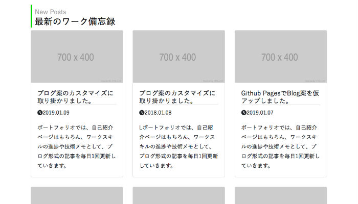
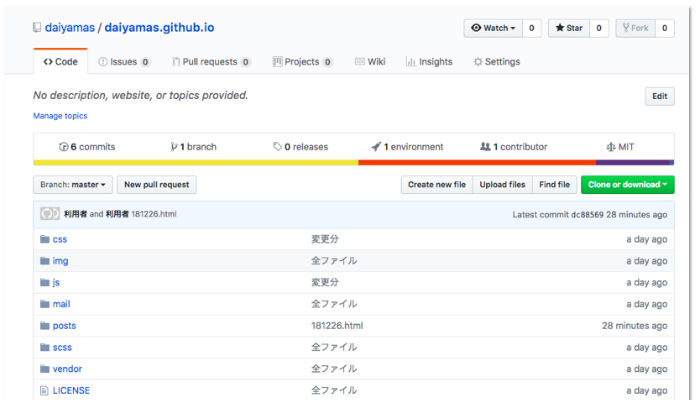
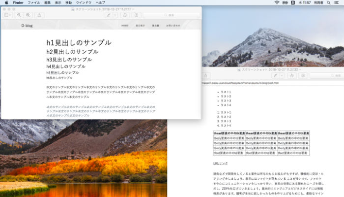
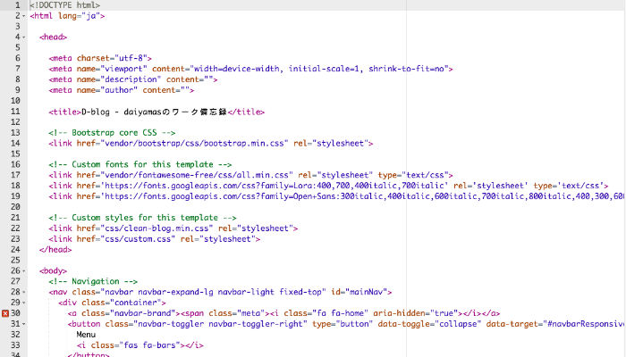

最近の備忘録

AB案で比較検討してみた結果。
本ブログのように、構成要素が少ないサイトを構築する際、1ページビューで該当する コンテンツをスクロールさせて表示する手法が考えられます。

自己紹介用のコンポーネントを追加してみました。
ベースに使用しているBootstrapテーマ「Clean Blog」は、 キービジュアル上に太いフォントの見出しを配置するレイアウト設定がされていました。

TOPページのカスタマイズを行いました。
サイトのキーカラーを緑色に設定し、 navbarのbackground-colorや見出し周りなどにアクセントを入れてみました。

Github PagesでBlog案を仮アップしました。
「PaizaCloud上にローカルリポジトリを配置できるのか？」 を調べてみましたが、参考になる情報は見つけられませんでした。

記事ページのフォーマット作成に取りかかりました。
Bootstrapテーマ『Clean Blog」をベースに、記事ページ(post.html)のカスタマイズを行いました。

ブログ案のカスタマイズに取り掛かりました。
ワークスキルの進捗や技術メモとして、ブログ形式の記事を毎日1回更新していきます。